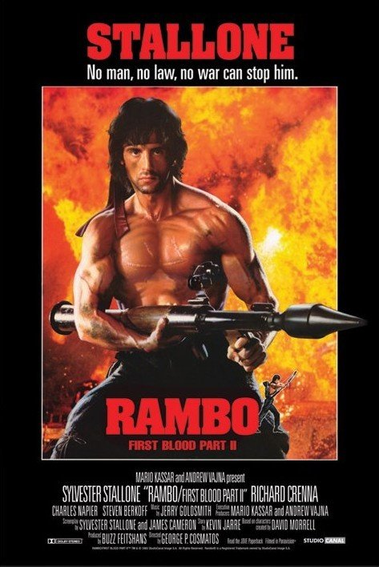

Рембо: Перша кров (1982)
Жанр: бойовик, драма
Режисер: Тед Котчефф
У ролях: Сільвестр Сталлоне, Річард Кренна, Брайан Деннехі
Перший фільм із серії про Джона Рембо — ветерана В’єтнамської війни, який стикається з ворожим ставленням з боку місцевої поліції. Герой виявляється змушений боротися за своє життя в умовах нерівного протистояння.
«Рембо: Перша кров» — не просто бойовик, а ще й глибока соціальна драма про посттравматичний синдром та несправедливість.